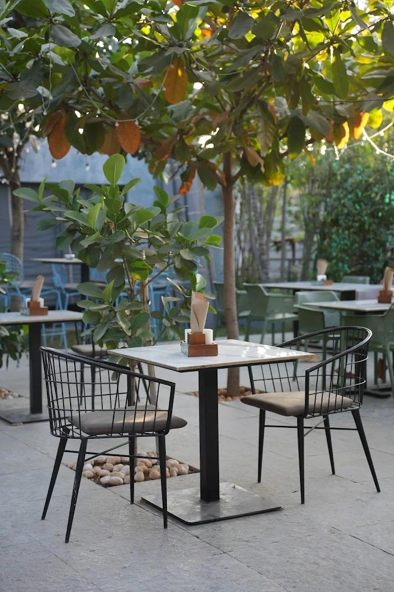

OTC Cafe
The garden was built around the tree, not the other way round.
Most places on this stretch of NH‑44 cleared the plot first and decided what to plant afterwards. OTC did the opposite. The tables were laid out to keep the canopy overhead, which is why the seating wanders instead of sitting in rows, and why the light on your table moves through the afternoon.
It means a few things in practice. The garden is cooler than the car park by a noticeable margin. Nobody minds a dog under the table. And at about seven in the evening, when the lights come on in the branches, the place stops looking like a cafe on a highway.
The plant-covered seating area is the reason most people come back — you forget the highway is right there.